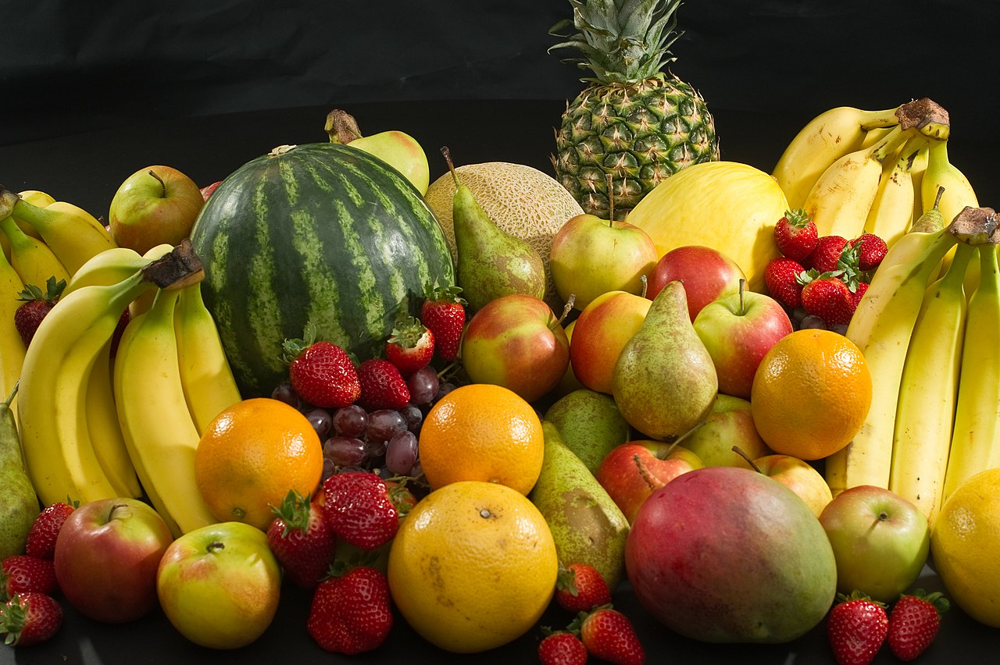

Qu'est-ce que l'une alimentation saine ?
Une alimentation saine est une pratique alimentaire qui permet de maintenir ou d'améliorer sa santé générale1. Une bonne alimentation fournit à l'organisme les nutriments essentiels : fluide, acides aminés essentiels des protéines2, acides gras, vitamines, minéraux, et suffisamment de calories. Une alimentation saine peut être satisfaite par une variété d'aliments d'origine végétale ou animale. Elle fournit l'énergie nécessaire sans exposer à la toxicité ou un gain de poids excessif dû à une consommation excessive. Un régime sain (en plus de l'activité physique) est également important afin de réduire les risques de santé, comme l'obésité, les maladies cardiaques, le diabète de type 2, l'hypertension et le cancer.

Selon l'Organisation mondiale de la santé, un régime alimentaire sain est composé des éléments suivants
:
des fruits, des légumes, des légumes secs (comme des lentilles et des pois), des fruits secs et des
céréales complètes (par exemple du maïs, millet, avoine, blé et riz brun non transformés);
au moins 400 g (soit 5 portions) de fruits et légumes par jour, hors pommes de terre, patates douces,
manioc et autres racines amylacées;
moins de 10 % de l’apport énergique total provenant de sucres libres, soit l’équivalent de 50 g (ou
environ 12 cuillères à café rases) pour une personne de poids normal consommant environ 2000 calories
par jour ; dans l’idéal, pour préserver davantage la santé, cette part devrait être inférieure à 5 % des
apports énergiques totaux;
moins de 30 % de l’apport énergétique total provenant des matières grasses. Les graisses insaturées
(poisson, avocat et noix, et les huiles de tournesol, de soja, de colza et d’olive) sont à préférer aux
graisses saturées (viande grasse, beurre, huile de palme et de noix de coco, crème, fromage, beurre
clarifié et saindoux) et aux acides gras trans (aliments industriels et viande et produits laitiers
provenant des animaux ruminants). Il est proposé de réduire l’apport en graisses saturées à moins de 10
% de l’apport énergétique total et celui en acides gras trans à moins de 1% ; les acides gras trans
sont à exclure d'une alimentation saine.
moins de 5 g de sel (soit environ une cuillère à café) par jour, de préférence iodé.